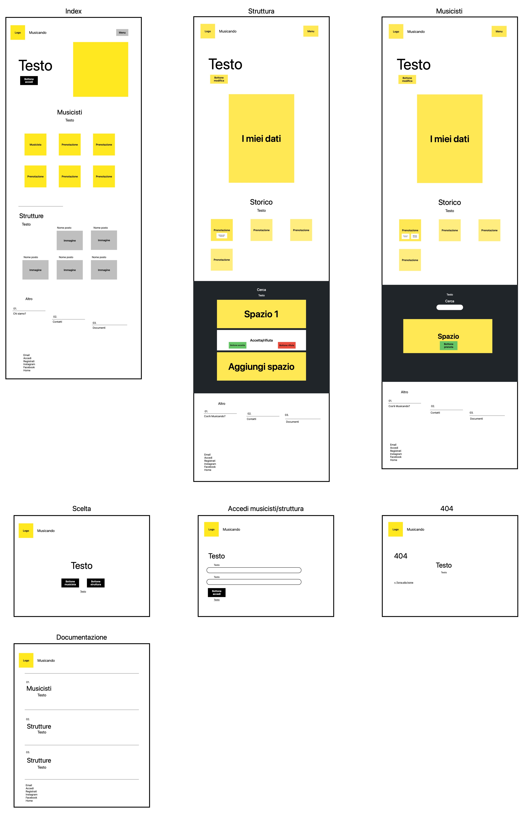

Abstract
Musicando serve per avvicinare i musicisti alle strutture d’assistenza che mettono a disposizione il loro spazio con lo scopo di usare la musica come strumento di terapia e ovviamente per avvicinare le persone. Portare allegria e buonumore è la missione di Musicando e di tutti quelli che decidono di iscriversi, non a caso il suo colore è il giallo. Attraverso una grafica intuitiva e pulita, questa piattaforma consente ai ragazzi e alle strutture di organizzare incontri in modo facile e veloce per garantire un’esperienza gradevole a entrambe le parti.
Project Management Plan
Benchmarking:
Obiettivi: creare un punto d’incontro tra chi vuole suonare e i centri d’assistenza che hanno un posto per ospitarli
Target: i centri d’assistenza e i ragazzi tra i 20 e i 30 anni, soprattutto gli studenti universitari e nello specifico quelli di medicina che per via dei loro studi sono già inseriti nel settore.
Competitors: VAMPR e iLIVEMUSIC sono due applicazioni, come sito abbiamo villaggiomusicale.com
Struttura e layout:
Architettura del sito:
Wireframe:
Look and Feel: la scelta più rilevante è stata quella dell’utilizzo del colore giallo che secondo alcuni studi viene associato a melodie allegre. Siccome il giallo è un colore acceso ho deciso di accostarlo al nero, al bianco e a un grigio chiaro per non appesantire con troppi colori. Per quanto riguarda il logo ho unito una nota musicale di colore giallo, e l’ho inserita dentro una cartella che ricorda le cartelline usate dai dottori. In ogni pagina ho inserito le cose che mi sembravano utili per facilitare l’utente, creando due modelli uno per la home del musicista e uno per la home delle strutture. In entrambe ho inserito uno storico delle prenotazioni dove quelle da fare sono gialle, mentre quelle già fatte sono giallo opaco. In quelle da fare ho aggiunto un modal che permette di vedere i contatti di chi è iscritto alla prenotazione. In questo modo i musicisti possono contattarsi tra loro e scegliere cosa suonare e gli ospedali hanno un riepilogo di chi si è prenotato. Inoltre, nella home della struttura ho messo un riquadro che consente di accettare o rifiutare chi si iscrive e una sezione per aggiungere nuovi spazi. Invece nella home dei musicisti ho messo un tasto cancella nel caso in cui l’utente non riuscisse più a partecipare.
Linguaggi e strumenti:
Linguaggi web: HTML, CSS, Java Script
Strumenti tecnologici: VisualStudioCode, OnePgelove.com, Image2Icon, AdobeFresco, Bootstrap, Github, FreeForm, GoodNotes
Link delle immagini utilizzate: Bologna Roma Bergamo Firenze Verona
{kind=link}
{kind=link}
{kind=link}
{kind=link}
Communication Strategy
Background: Le piattaforme che esistono già hanno un pubblico molto più vasto e spesso un sistema di messaggistica che viene usato per mettersi d’accordo per incontrarsi. Ciò che serve per questo particolare target è qualcosa di immediato che richieda il minor tempo possibile. Da una parte abbiamo le strutture ospedaliere che offrono questo servizio come un progetto extra; dall’altra abbiamo studenti universitari che devono dividere il proprio tempo tra lezioni e studio. Entrambi i gruppi hanno quindi bisogno di una piattaforma che li agevoli nella programmazione di questa attività. Penso che le applicazioni/sito citati sopra siano efficaci per il target al quale si rivolgono, ma credo che per i due soggetti che ho scelto io non siano abbastanza immediati.
Obiettivi comunicativi: L’obiettivo del sito è quello di avvicinare i musicisti alla realtà delle strutture ospedaliere dove ci sono persone che sicuramente traggono benefeci dalla musica. Queste piccole realtà già esistono e il sito serve per unirle a livello nazionale ma soprattutto a promuoverle e a fare in modo che sempre più persone entrino a farne parte.
Target, audience e messaggio: Il target sono i ragazzi universitari con un’età compresa tra i 20 e i 30, e il settore delle strutture di assistenza. Sicuramente la promozione di questa attività può risultare complessa perché non tutte le strutture sono adeguate a ospitare i musicisti; ma a volte l’attività non viene portata avanti semplicemente per mancanza di organizzazione e il sito sarebbe un valido strumento per ovviare questo problema. Inoltre, molto spesso chi va a suonare partecipa al progetto perché è uno studente di medicina o di facoltà che rimandano al mondo della sanità mentre il sito potrebbe avvicinare studenti di altri corsi.
Promozione: Per quanto riguarda la promozione del sito ho pensato a una pagina Instagram perché raggiunge più facilmente i ragazzi tra i 20 e i 30, mentre una pagina Facebook può raggiungere più facilmente i lavoratori dei centri d’assistenza. Altro strumento per la promozione è un volantino da mettere nelle bacheche universitarie e in quelle delle strutture.
Valutazione dei risultati